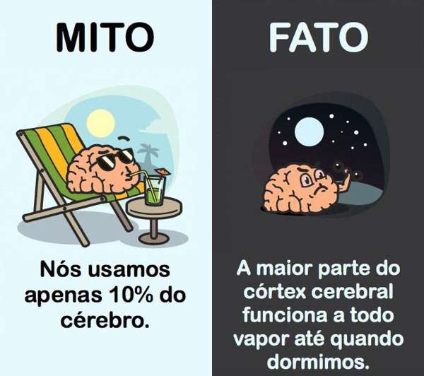

<!doctype html>
<html lang="en">
    <head>
        <meta charset="utf-8">
        <title>RevealJS : c:\Users\Matheus_Souza1\Documents\seminario2.md</title>
        <link rel="stylesheet" href="css/reveal.css">
        <link rel="stylesheet" href="css/theme/beige.css" id="theme">
        
       
        <!-- For syntax highlighting -->
        <link rel="stylesheet" href="lib/css/white.css">

        

        <!-- If the query includes 'print-pdf', use the PDF print sheet -->
        <script>
          document.write( '<link rel="stylesheet" href="css/print/' + ( window.location.search.match( /print-pdf/gi ) ? 'pdf' : 'paper' ) + '.css" type="text/css" media="print">' );
        </script>

        <style type="text/css">
            @page {    
              margin: 0;
              size: auto; 
            }
        </style>

        <script>
         if(window.location.search.match( /print-pdf-now/gi )) {
           window.print();
         }
      </script>

    </head>
    <body>

        <div class="reveal">
            <div class="slides"><section  data-markdown><script type="text/template">
# 10% do cérebro

Quanto do seu  cérebro você usa? E da sua capacidade? E o seu potencial?


<small>André Mueller, Bruna Andrade, Matheus Souza</small> 

<aside class="notes"><p>“Não há qualquer razão científica para supor que usamos 10% do nosso cérebro. Nem 10% dos nossos neurônios. Nem 10% da nossa capacidade. Todas as evidências sugerem o contrário: usamos nosso cérebro inteiro.</p>
<p>“Usar 10% apenas passa a ideia que poderíamos ficar mais inteligentes simplesmente aumentando o uso do cérebro.”</p>
</aside></script></section><section  data-markdown><script type="text/template">


<!-- .slide: data-background="https://i.ytimg.com/vi/Iv7jFFyz7zY/maxresdefault.jpg" -->
notes:
O conceito do filme é sobre o que aconteceria se um ser humano utilizasse 100% da sua capacidade cerebral, já que supostamente (e é esse o polêmico pressuposto do filme) apenas chegamos a utilizar 10%.

</script></section><section  data-markdown><script type="text/template">

Um fator que certamente alimentou a propagação deste mito é o fato de que ele proporciona uma explicação "científica" para a suposta capacidade psíquica ou paranormal de certas pessoas.

<small>
<site>
Alexandre Taschetto de Castro
</site>
</small>

</script></section><section  data-markdown><script type="text/template">



</script></section><section  data-markdown><script type="text/template">

 
### Reflexões

Se usamos apenas 10%. Como fica a plasticidade?
 
Não faz sentido usar apenas 10% no sentido de evolução, não necessitaria então possuir tal tamanho e forma.
 
Usamos o cérebro 100%, mas não todo ele todo o tempo?
 
Um computador que utiliza 100% de sua capacidade é eficiente?

10% do que? Potencial ? Massa cerebral ? Neurônios? 

</script></section><section  data-markdown><script type="text/template">

<iframe width="100%" height="100%" src="https://www.youtube.com/embed/LqI6YiwKrVY" frameborder="0" allow="autoplay; encrypted-media" allowfullscreen></iframe>

</script></section><section  data-markdown><script type="text/template">
</script></section></div>
        </div>

        <script src="lib/js/head.min.js"></script>
        <script src="js/reveal.js"></script>

        <script>
            function extend() {
              var target = {};
              for (var i = 0; i < arguments.length; i++) {
                var source = arguments[i];
                for (var key in source) {
                  if (source.hasOwnProperty(key)) {
                    target[key] = source[key];
                  }
                }
              }
              return target;
            }
            // Optional libraries used to extend on reveal.js
            var deps = [
              { src: 'lib/js/classList.js', condition: function() { return !document.body.classList; } },
              { src: 'plugin/markdown/marked.js', condition: function() { return !!document.querySelector('[data-markdown]'); } },
              { src: 'plugin/markdown/markdown.js', condition: function() { return !!document.querySelector('[data-markdown]'); } },
              { src: 'plugin/highlight/highlight.js', async: true, callback: function() { hljs.initHighlightingOnLoad(); } },
              { src: 'plugin/notes/notes.js', async: true, condition: function() { return !!document.body.classList; } },
              { src: 'plugin/math/math.js', async: true }
            ];
            // default options to init reveal.js
            var defaultOptions = {
              controls: true,
              progress: true,
              history: true,
              center: true,
              transition: 'default',
              dependencies: deps
            };
            // options from URL query string
            var queryOptions = Reveal.getQueryHash() || {};
            var options = {
  "notesSeparator": "note:",
  "separator": "^[\r\n?|\n]---[\r\n?|\n]$",
  "verticalSeparator": "^[\r\n?|\n]--[\r\n?|\n]$",
  "theme": "beige",
  "highlightTheme": "white",
  "controls": true,
  "progress": true,
  "slideNumber": false,
  "history": true,
  "keyboard": true,
  "overview": true,
  "center": true,
  "touch": true,
  "loop": false,
  "rtl": false,
  "shuffle": false,
  "fragments": true,
  "embedded": false,
  "help": true,
  "showNotes": false,
  "autoSlide": 0,
  "autoSlideStoppable": true,
  "mouseWheel": false,
  "hideAddressBar": true,
  "previewLinks": false,
  "transition": "concave",
  "transitionSpeed": "default",
  "backgroundTransition": "default",
  "viewDistance": 3,
  "parallaxBackgroundImage": "",
  "parallaxBackgroundSize": "",
  "parallaxBackgroundHorizontal": null,
  "parallaxBackgroundVertical": null,
  "slideExplorerEnabled": true,
  "browserPath": null,
  "attributes": ""
};
            options = extend(defaultOptions, options, queryOptions);
            Reveal.initialize(options);

        </script>
        
    </body>
</html>